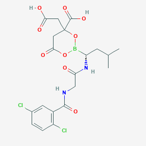
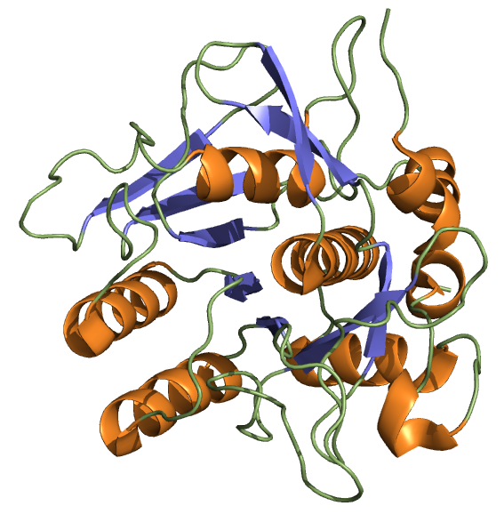
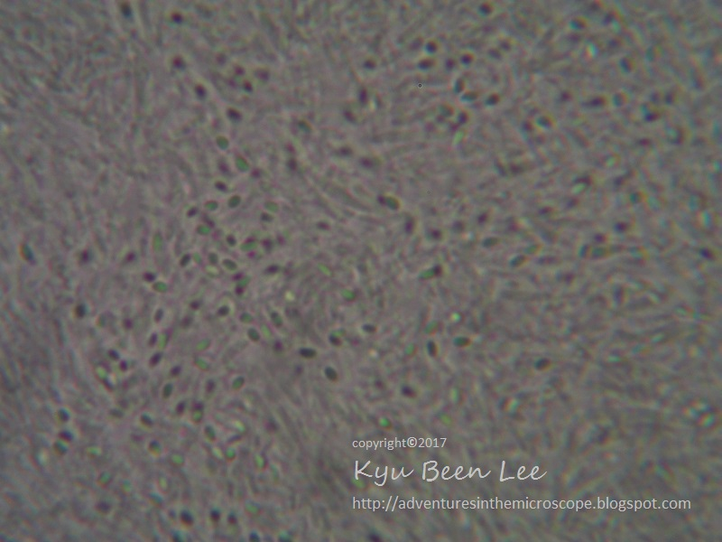

นัตโตะญี่ปุ่น ก็มีญาตินะ
ญาติใกล้ๆ
ถั่วหมักลักษณะคล้ายๆนัตโตะนั้นสามารถพบได้ในแถบเอเชีย ไล่ไปตั้งแต่ประเทศใกล้ๆญี่ปุ่น คือประเทศเกาหลี
ถัดไปที่ประเทศจีน
เวียดนาม ทางตอนเหนือของไทย เรื่อยขึ้นไปตามเทือกเขาหิมาลัย แถบประเทศเนปาล และประเทศอินเดีย
ส่วนญาติห่างๆนั้นอยู่
ไกลถึงแอฟริกาโน้นเลยทีเดียว
ถั่วหมักของประเทศเกาหลี
เรามาเริ่มกันที่ถั่วหมักของประเทศเกาหลีซึ่งมีชื่อว่า
Chungkak-jang กันก่อน
ถั่วหมักชนิดนี้มักผลิตในช่วงฤดูใบไม้ร่วง
วิธีการทำก็คล้ายๆกับการทำนัตโตะ คือนำถั่วเหลืองมาล้าง แช่น้ำทิ้งไว้หนึ่งคืน แล้วต้มหรือนึ่งพอสุก
จากนั้นนำไปใส่ภาชนะคล้ายๆถ้วย แล้วเอาผ้าคลุมไว้ ตั้งไว้ที่อุณหภูมิปกติ ประมาณ 24-72 ชั่วโมง
พอหมักจนเริ่มได้กลิ่นแอมโมเนีย ก็นำมาเติมเกลือ กระเทียม และพริกแดงลงไปจากนั้นผสมให้เข้ากัน
สับหรือบดแล้วหมักต่อจนถึงฤดูหนาว ยังมีถั่วหมักอีกประเภทชื่อว่า Dambuk-jang ซึ่งเป็นประเภทที่ใส่เกลือแต่
ไม่ใส่เครื่องเทศอื่นๆ
ถั่วหมักของประเทศจีน
ขยับขึ้นมายังประเทศจีนทางตอนใต้ แถบมลฑลยูนานนอกจากจะมีถั่วหมักคล้ายนัตโตะแล้ว
ยังมีถั่วซึ่งหมักด้วยเชื้อราเรียกว่า
Tan-shih และ Kan-shih (มีรสหวาน) เรื่อยลงมาทางใต้ก็จะพบกับ "ถั่วเน่า"
ซึ่งเป็นอาหารหมักที่ถือเป็นภูมิปัญญา
ของชาวบ้าน ชื่อมันว่าถั่วเน่า แล้วมันจะกินได้เหรอ หลายๆคนอาจจะสงสัย
หรือส่ายหน้าแล้วบอกว่าก็มันเน่าแล้วจะเอามา
กินทำไมล่ะ...จริงๆแล้วถั่วเน่านั้นนำมาใช้แทนน้ำปลา หรือกะปิ โดยนำมาใส่เป็นเครื่องแกงต่างๆ เช่น แกงผักกาด
ขนมจีนน้ำเงี้ยว หรือน้ำพริกอ่อง หรือย่างแล้วรับประทานกับข้าวเหนียว
ถั่วหมักของประเทศไทย
ถั่วเน่านี้เป็นอาหารหมักซึ่งมีการผลิตและรับประทานกันทางภาคเหนือของประเทศไทยเรา
ส่วนความเป็นมานั้นยังไม่มีหลักฐานแน่นอน
เพียงแต่มีผู้สันนิษฐานว่านำเข้ามาจากชนเผ่าที่เรียกตัวเองว่า "ลั๊วะ"
ซึ่งเคยอาศัยอยู่ในดินแดนแถบล้านนาเมื่อกว่าสองพันปีมาแล้ว
วิธีการทำนั้นก็จะคล้ายถั่วหมักชนิดอื่นๆคือนถั่วเหลืองมาแช่น้ำ แล้วนึ่งหรือต้มให้สุก
แล้วนำไปใส่ตะกร้าที่กรุด้วยใบตองตึงแล้วนำไปตากแดด
เพื่อให้เกิดการหมัก ประมาณ 2-3 วัน เมื่อถั่วเริ่มเปื่อยเน่า และส่งกลิ่นเหม็นเล็กน้อย
ก็จะนำออกมาบดพร้อมกับเครื่องปรุง
ได้แก่ เกลือ กระเทียม หัวหอมแดง และพริก สามารถนำมารับประทานได้เลย
หรืออาจจะห่อด้วยใบตองตึงแล้วย่างด้วยไฟอ่อน
ก็สามารถเก็บได้ 2-3 วัน หากต้องการเก็บให้นานกว่านั้นสามารถนำมาทำให้เป็นแผ่นบางๆ แล้วตากแดดจนแห้ง
นอกจากทางเหนือของไทยเราแล้ว ทางแถบประเทศพม่า ลาว
และเวียดนามทางตอนเหนือก็มีการบริโภคถั่วหมักคล้ายกันนี้ด้วย
ถั่วหมักเเถบตะวันออก
จากประเทศไทยเราก็จะต่อไปยังประเทศอินเดีย และประเทศเนปาลก็มีถั่วหมักชนิดที่เรียกว่า
คิเนมะ
(Kinema)
ประวัติความเป็นมานั้นยังไม่ทราบแน่นอน แต่คาดว่าอาจจะมีความเกี่ยวข้องกับถั่วหมักแบบคล้ายกันของประเทศจีน
บางกลุ่มก็สันนิษฐานว่าถูกนำเข้ามาจากทางมลฑลยูนานเมื่อกว่า 1,600 ปีมาแล้ว วิธีทำก็จะคล้ายๆ
ถั่วเน่าของเราคืออาศัยแบคทีเรียจากธรรมชาติในการหมัก คิเนมะจะมีลักษณะเหนียวยืดคล้ายนัตโตะ
แบ่งเป็นสองประเภทคือที่มีสีน้ำตาลเข้ม และชนิดสีน้ำตาลอ่อน โดยปกติจะนำ คิเนมะไปทอด
แล้วโรยเกลือเล็กน้อยก็รับประทานได้
ญาติไกลๆ
จากญาติใกล้ๆ ก็จะพาไปรู้จักกับญาติห่างๆของนัตโตะ
ที่ว่าห่างนั้นก็เพราะมันอยู่ไกลถึงแถบสะวันน่าของแอฟริกาและอาหารหมักชนิด
นี้ไม่ได้ใช้ถั่วเหลืองเป็นวัตถุดิบ ชื่อของมันมีหลายชื่อขึ้นกับท้องถิ่นและเมล็ดของพืชที่เขานำมาใช้
"ดาว่าดาว่า (Dawadawa)"
ซึ่งรับประทานกันทางแถบประเทศกาน่า ดาว่าดาว่า นั้นเป็นชื่อของต้นไม้ชนิดหนึ่ง
ซึ่งเขาจะใช้เมล็ดในฝักของมันมาทำอาหารหมัก
การหมักนั้นก็ทำโดยอาศัยเชื้อจากธรรมชาติ เขาก็นำมาใส่แกงได้หลายชนิด ถือเป็นการถนอมอาหารอย่างหนึ่งเช่นกัน

พันธะทางเคมีของ Nattokinase

Crystal structure of nattokinase

ภาพขยายโดยกล้องจุลทรรศ์ 1000 เท่า โดยเทน้ำส้มสายชูลงทำให้เเบคทีเรียในนัตโตะนั้นตื่นตัว
สารอาหารสำคัญ
Nattokinase
นัตโตะ(Natto) หรือถั่วเน่าญี่ปุ่น ใช้จุลินทรีย์ที่คัดเลือกมาโดยเฉพาะ
จึงทำให้ได้ถั่วเน่าที่มีคุณภาพสูง เป็นที่รู้จักกันอย่างกว้างขวาง
และเป็นที่นิยมกันอย่างมากในด้านการดูแลสุขภาพ
ชาวญี่ปุ่น ใช้นัตโตะ เป็นอาหารเช้ามาอย่างยาวนาน กว่า 1000 ปี
โดยเกิดจากกระบวนการหมักอาหารที่ทำกันมายาวนาน นัตโตะไคเนส (Nattokinase) เป็นผลผลิต
จากการหมักถั่วเหลือง โดยใช้แบคทีเรียบาซิลลัสนัตโตะ
ประโยชน์ที่สำคัญ
ถั่วเหลืองที่ผ่านการหมักโดยใช้ แบคทีเรียบาซิลลัสนัตโตะ
ก่อให้เกิดไบโอเคมีหลากหลายชนิดที่เป็นประโยชน์ต่อร่างกาย เช่น
การสลายลิ่มเลือดที่เป็นสาเหตุของเส้นเลือดอุดตัน การลดคอเลสเตอรอล ลดความดันโลหิต ต่อต้านแบคทีเรีย
ยับยั้งกระบวนการออกซิเดชั่น ต้านอนุมูลอิสระ ยับยั้งแบคทีเรียไม่ดีในลำไส้ ต้านการเกิดมะเร็ง
และปกป้องอาการสมองตาย เนื่องจากสมองขาดเลือด การเกิดลิ่มเลือดทำให้เส้นเลือดสมองอุดตัน
ต่อต้านการเกิดโรคกระดูกพรุน และช่วยดูแลสุขภาพในด้านต่างๆ อีกมากมาย
ผลวิจัยทางการแพทย์
ผลวิจัยทางการแพทย์เกี่ยวกับประโยชน์ของการบริโภคนัตโตะ (Natto) เริ่มปรากฏตั้งแต่ ในทศวรรษ 1980
ซึ่งพบว่า นัตโตะ (Natto) อุดมไปด้วยสารชีวภาพหลายชนิดที่มีประโยชน์ต่อร่างกาย
การหมักโดยใช้เชื้อแบคทีเรีย ซึ่งเป็นสิ่งที่ทำให้ นัตโตะ (Natto) มีความแตกต่าง
จากอาหารถั่วเหลืองหมักชนิดอื่นๆ ซึ่งใช้เชื้อรา ตัวอย่างเช่น เต้าเจี้ยว เป็นต้น นัตโตะ
ผลิตจากกระบวนการหมัก ซึ่งไม่เพียงแต่มีส่วนประกอบที่มีคุณค่าจากถั่วเหลือง
แต่ยังมีคุณค่าในกระบวนการช่วยย่อย และการดูดซึม โปรตีนจากถั่วเหลือง
นัตโตะไคเนสเป็นเอนไซม์
ในเบื้องต้นถูกสกัดจากถั่วเน่าญี่ปุ่น ซึ่งเรียกว่า
Subtilisin NAT ซึ่ง
นัตโตะไคเนส เป็นเอนไซม์ กลุ่มเซรีนโปรติเอส (Serine Protease) ซึ่งจากการทดลองโดย Fujita et al.
พบว่ามีความสามารถในการย่อย Fibrin สูง และ ในถั่วหมักแบบจีน ที่เรียกว่า Douchi พบเอนไซม์ Subtilism
DFE ซึ่งมีความสามารถในการย่อย thrombi ได้ในร่างกายมนุษย์
หรือแม้กระทั่งถั่วเน่่าแบบพื้นเมืองของไทยก็มีคุณบัติเหล่านี้เช่นกัน
จึงได้มีการนำนัตโตะหรือถั่วเน่าญี่ปุ่นมาผลิตและสกัดเอนไซม์กลุ่ม Fibrinolytic
เพื่อใช้เป็นสารลดการตีบตันในเส้นเลือด และสามารถช่วยป้องกันอาการต่างๆ
ของโรคที่เกี่ยวกับหลอดเลือดและหัวใจ ป้องกันการเกิดลิ่มเลือด เส้นเลือดอุดตันได้เป็นอย่างดี
และมีความปลอดภัยสูง